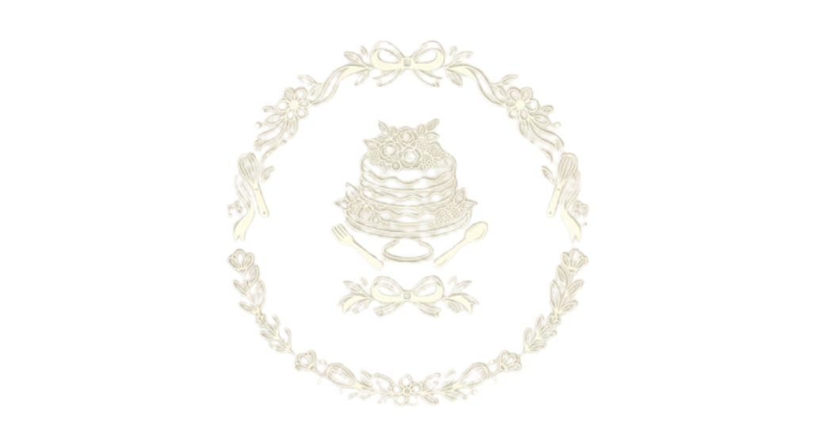
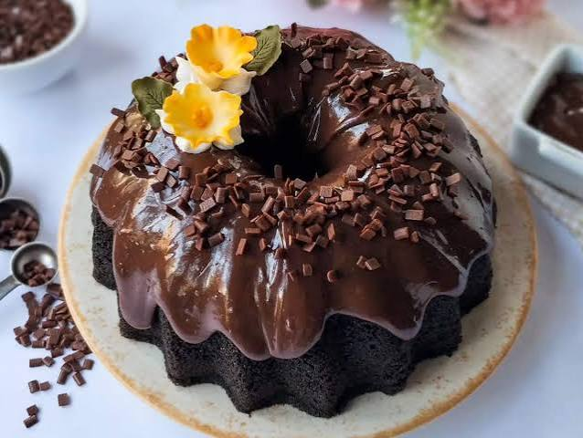
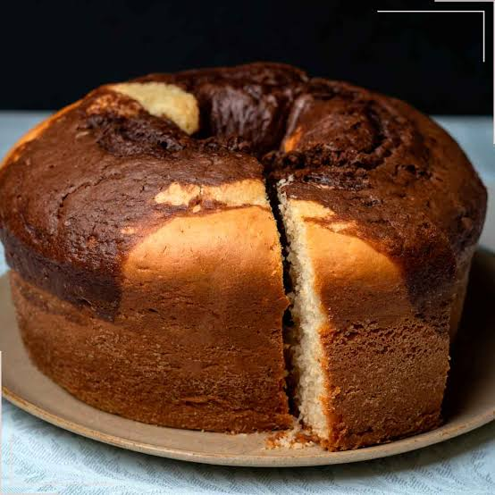
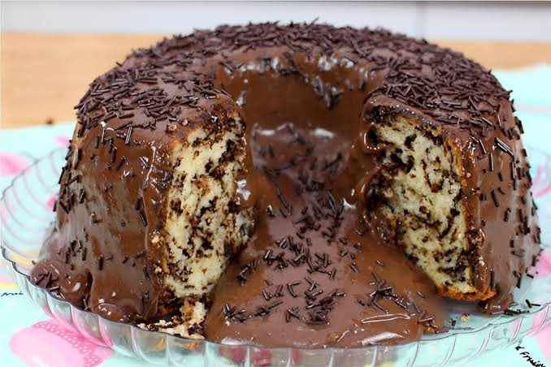
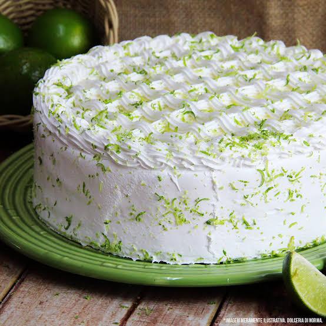

Sobre nós
Na Bolos da Neide, transformar ingredientes simples em memórias inesquecíveis é a nossa grande paixão. O que começou de forma artesanal na cozinha de casa cresceu com base no carinho, no cuidado e no respeito às receitas tradicionais, trazendo para cada fatia aquele sabor autêntico e aconchegante de bolo feito na hora.
Acreditamos que cada celebração — seja uma grande festa ou um simples café de fim de tarde — merece um toque de doçura. Por isso, selecionamos sempre os melhores ingredientes para criar produtos frescos, bonitos e cheios de afeto, feitos especialmente para adoçar os seus melhores momentos.
Conheça nossos produtos:

Bolo de Cenoura
Massa fofinha de cenoura com cobertura generosa de brigadeiro cremoso. Irresistível!

Bolo de Chocolate
Massa úmida e fofinha de chocolate com cobertura cremosa e intensa. Perfeito!

Bolo de mesclado
O melhor dos dois mundos: massa fofinha mesclada de baunilha e chocolate. Delicioso!

Bolo de fubá com goiabada
Fubá super macio com pedaços derretidos de goiabada cremosa. O verdadeiro sabor caseiro!

Bolo formigueiro
Massa leve e fofinha cheia de granulado de chocolate. Divertido e irresistível!

Bolo de limão
Massa fofinha com toque cítrico e cobertura cremosa azidinha. Refrescante e irresistível!